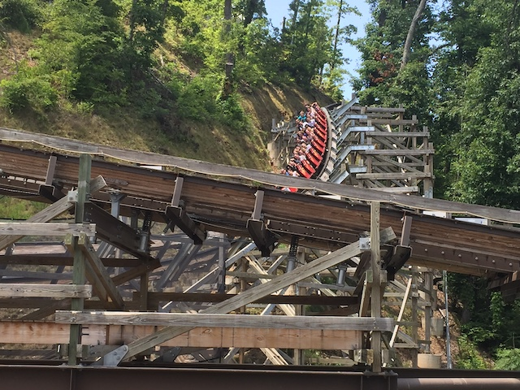
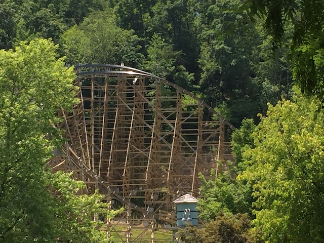

| |
.
Lightning Rod Review

Today, we'll be heading over to Dollywood to review their star attraction and one of the best wooden coasters in the world. Yep. We're reviewing Lightning Rod. This is one of the RMC Woodies. RMCs already make amazing rides, and we know from riding its sister ride, Outlaw Run, that RMC Woodies are amazing. While it is true that this one doesn't have any inversions (something rare among RMCs), it has a ton of crazy moments, some STRONG ejector air, and a freaking LAUNCH!!! Yep. This is the only launched wooden coaster in the world. So we're really in for a treat. Buckle up, cause this is one hell of a roller coaster. So yeah. Get in the cars, buckle the seatbelts, the operator will pull down your lap bar (annoying, but let's move on and just enjoy one of the best wooden coasters ever). And off we go! Roll around a turn, go through some straight track, heading towards the lifthill. But then....BOOM!!! You just get LAUNCHED up the lifthill. And no. This isn't just a fast lifthill that some will claim is a launch. This is an actual genuine launch up the lifthill. And it's pretty good. Not the craziest launch ever, but....this is a LAUNCH ON A FREAKING WOODEN COASTER!!! AND IT'S FREAKING AWESOME!!! If I had to describe the launch to anything, the best comparison would be the launch on The Incredible Hulk. Except you don't have any cool theming. And you don't go straight into a heartline spin from it. Hmm, knowing RMC and how much they love twisty inversions, I could totally see them doing something like that. >=) Moving on. While this launch doesn't lead into a heartline spin, it does lead to the rest of the crazy layout. So we fly off the launched lift, dip down a small drop, rise up a little bit, and go down the first drop. A super big, super steep first drop. And considering how much speed we're already carrying from the launch, we FLY over this thing, and get some REALLY strong ejector air. Fly underneath the ride at the bottom of the first drop, we then roar up into a curved hill. Standard curved hill. except on most rides, you get back rightside up at the top. But then you remember. This is an RMC. So you just fly through the hill still banked. And....this is pretty banked. Yeah. It's another 90 degree airtime hill. Only curved as well, so we also get some sweet laterals to go with it. =) Curve back to the ground, and get back rightside up. Oh, and dip back down underneath Lightning Rod. HEADCHOPPER!!! We then bank again and go up a curved hill, right up...the hill. Yeah. This ride is not even really in Dollywood. It pretty much just ventures out into the woods and is out there, away from the rest of the park. I imagine a night ride on this thing would be pretty sweet. But anyways, we curve up the hill, but at the very top, we abruptly bank in the opposite direction, giving us some seriously crazy laterals, along with some airtime. I mean this isn't just sideways airtime. No, this is getting YANKED onto your left side, when you're already sideways on your right side, while also being yanked out of your seat. Yeah. This is a seriously awesome moment. And considering that we then curve back in the opposite direction, it's almost like a half-inversion. You don't go upsidedown, but it gives a similar feeling, along with some crazy laterals. We go back down the hill in a curved drop. And we are just FLYING through this course! We a tiny little hill, but...of course, it's a sideways airtime hill. SIDEWAYS AIRTIME!!! GOD DAMN IT!!! THIS THING IS A SIDEWAYS AIRTIME MACHINE!!! AND IT IS F*CKING CRAZY WITH ALL THE EJECTOR AIRTIME AND LATERALS!!! Go back to normal, and we head up a hill. Get some airtime and...we're rightside up. Strangely, now that feels weird on this ride. Because there's so much sideways airtime before it that you just get used to it! We then head up another small hill, and begin to head into one of the most famous parts of the ride. The Quad-Down. Yep. We drop down four times and get four moments of EJECTOR AIR!!! Drop #1. EJECTOR AIR!!! Drop #2. EJECTOR AIR!!! Drop #3. EJECTOR AIR!!! Drop #4. EJECTOR AI...F*CK!!! I love how this thing just bounces its way down the hill in such a wildly crazy manner. RIP through a turn, dip down, and go up another crazy curved hill!!! SWEET!!! Dip down, and...into the brake run. Aww. Yeah. If I had to pick one nitpick with the ride, it's that it fizzles out after the quad down, and that curved hill up and small drop into the brake run isn't as good a way to end the ride as say....a double barrel roll. Yeah. That's why I give Outlaw Run the slight edge. But putting that aside, this ride is BATSH*T INSANE!!! The amount of sideways airtime is just mind-boggling. So if that's your cup of tea, then Lightning Rod is probably the best coaster on the planet for you since this ride is the KING of sideways airtime. There is just SO MUCH of it! It's just so crazy out in those woods! And of course, that launch is just CRAZY!!! Especially with the first drop right afterwards, that just makes it a crazy ride! Yeah. The ride being out in the woods makes it a real pain in the ass to get photos of unless there was some way to get a backstage tour. But nonetheless, SO GOOD!!! YOU GOTTA HIT THIS IF YOU'RE AT DOLLYWOOD!!! ONE OF THE BEST COASTERS EVER!!!
10/10
Location: Dollywood
Opened: 2016
Built by: Rocky Mountain Coasters
Last Ridden: July 24, 2019
Lightning Rod Photos






Home
|